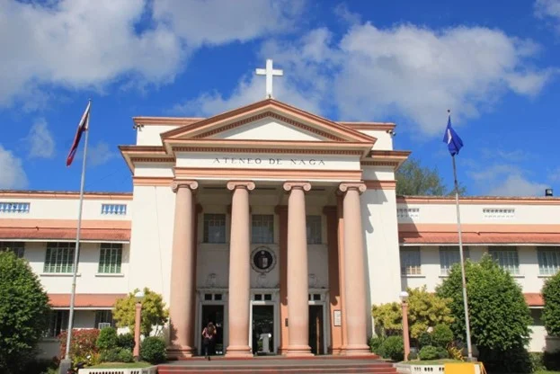
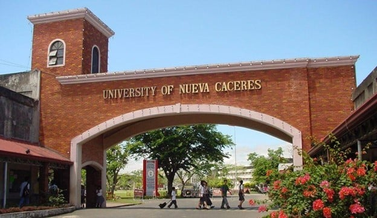
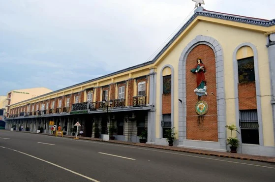
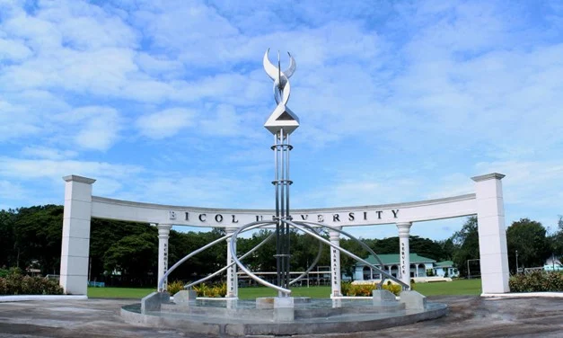
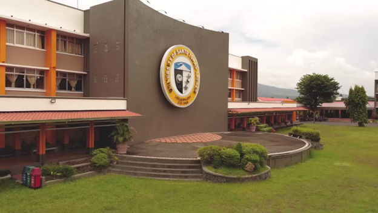
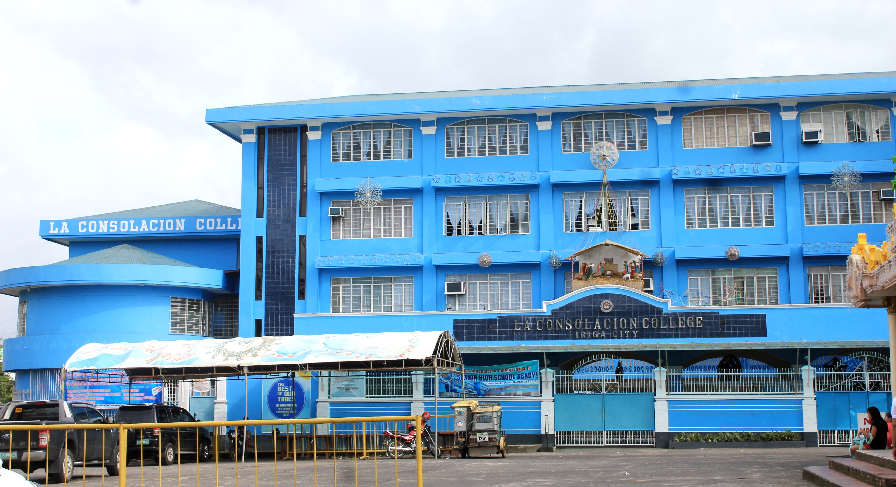
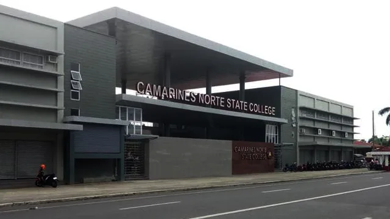
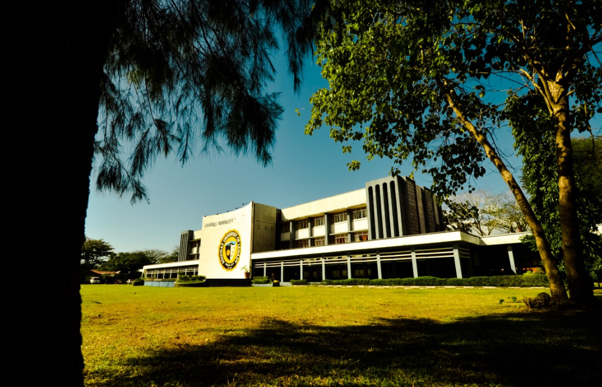
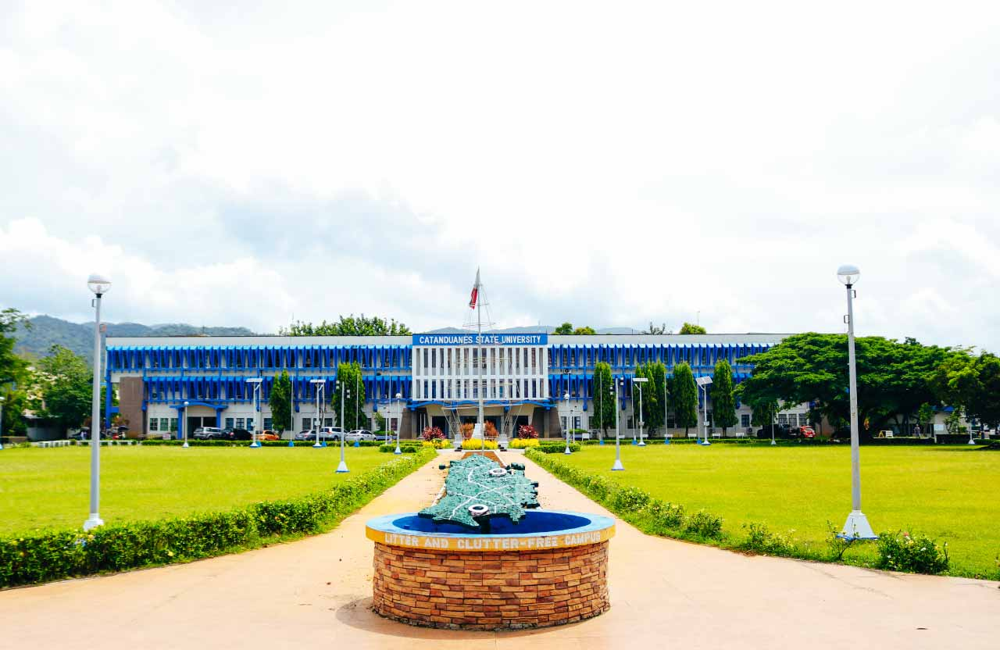

Ateneo de Naga University (AdNU)
-The Ateneo de Naga University is a Private Catholic University run by Jesuits. AdNU offers primary education (located at Pacol Campus in Naga City) and higher education, with its main campus located at Brgy. Bagumbayan, Naga City. It is one of the schools within the ‘University Belt,’ which houses several schools and universities in Metropolitan Naga. Some facilities are the in-campus church of Christ the King, Fernando Hall (Conference Hall), and S.J. Library.

University of Nueva Caceres (UNC)
-The University of Nueva Caceres or UNC is a private, non-sectarian university run by iPeople, Inc, a joint venture of Ayala Corporation and Yuchengco Group of Companies. It was founded in 1948 and was the first university in southern Luzon outside Metro Manila. It is located along J. Hernandez Avenue, Naga City just in Metro Naga.

Universidad de Sta. Isabel
-This university is formerly known as Colegio de Sta. Isabel is a private Catholic University run by the Sisters of Charity of St. Vincent de Paul. Founded in 1868, this school was the first regular university for women in the Philippines and Southeast Asia. At present, they offer coeducation for all levels. In 2019, USI was also declared a National Historic Landmark by the National Historical Commission of the Philippines. It is located along Elias Angeles St. in Naga City.

Bicol University (B.U.)
-The Bicol University or B.U. is a regional state, research, and coeducational higher education institution with multiple campuses across Albay and Sorsogon. It is also considered the most prominent university in Bicol in terms of population.

University of Santo Tomas – Legazpi (UST-L)
-Formerly known as the Aquinas University of Legazpi, UST-L is a private Catholic university. It is a separate institution from UST in Manila, which is also run by the Philipinne Dominican Province of the Order of Preachers. It is located at Rawis, Legazpi City.

Sorsogon State University (SorSU)
-Sorsogon State University, formerly known as Sorsogon State College, is one of the oldest trade schools in the Philippines. Its main campus is located along Magsaysay Street, Sorsogon City. This school was formed from the integration of four vocational schools, which now serve as the present-day campuses of the university located at Castilla, Bulan, ang Magallanes in Sorsogon. It was established as a college in 1993 and declared a university in 2021.
La Consolacion College
-Established in 1949, the La Consolacion College is a private higher education institution located in the small city of Iriga City (population range of 50,000-249,999 inhabitants), Bicol Region. Officially recognized by the Commission on Higher Education of the Philippines, La Consolacion College (LCC) is a coeducational Philippine higher education institution. La Consolacion College (LCC) offers courses and programs leading to officially recognized higher education degrees such as pre-bachelor's degrees (i.e. certificates, diplomas, associate or foundation) and bachelor's degrees in several areas of study. See the uniRank degree levels and areas of study table below for further details. LCC also provides several academic and non-academic facilities and services to students including a library, as well as administrative services.

Camarines Norte State College
-Founded in 1992, the Camarines Norte State College is a non-profit public higher education institution located in the suburban setting of the small city of Daet (population range of 50,000-249,999 inhabitants), Bicol Region. Officially recognized by the Commission on Higher Education of the Philippines, Camarines Norte State College (CNSC) is a medium-sized (uniRank enrollment range: 7,000-7,999 students) coeducational Philippine higher education institution. Camarines Norte State College (CNSC) offers courses and programs leading to officially recognized higher education degrees such as bachelor's degrees and master's degrees in several areas of study. See the uniRank degree levels and areas of study table below for further details. This 31-year-old Philippine higher-education institution has a selective admission policy based on entrance examinations and students' past academic records and grades. The acceptance rate range is 80-89% making this Philippine higher education organization a least selective institution. CNSC also provides several academic and non-academic facilities and services to students including a library, housing, sports facilities, financial aids and/or scholarships, as well as administrative services.

Aquinas University of Legazpi
-Established in 1948, the Aquinas University of Legazpi is a non-profit private higher education institution located in the urban setting of the small city of Legazpi City (population range of 50,000-249,999 inhabitants), Bicol Region. Officially recognized by the Commission on Higher Education of the Philippines, Aquinas University of Legazpi (AUL) is a small-sized (uniRank enrollment range: 4,000-4,999 students) coeducational Philippine higher education institution formally affiliated with the Christian-Catholic religion. Aquinas University of Legazpi (AUL) offers courses and programs leading to officially recognized higher education degrees such as bachelor's degrees, master's degrees and doctorate degrees in several areas of study. See the uniRank degree levels and areas of study table below for further details. This 75-year-old Philippine higher-education institution has a selective admission policy based on entrance examinations. International applicants are eligible to apply for enrollment. AUL also provides several academic and non-academic facilities and services to students including a library, housing, sports facilities, financial aids and/or scholarships, study abroad and exchange programs, as well as administrative services.

Catanduanes State University
-Founded in 2012, the Catanduanes State University is a non-profit public higher education institution located in the suburban setting of the large town of Virac (population range of 10,000-49,999 inhabitants), Bicol Region. Officially recognized by the Commission on Higher Education of the Philippines, Catanduanes State University (CSU) is a medium-sized (uniRank enrollment range: 6,000-6,999 students) coeducational Philippine higher education institution. Catanduanes State University (CSU) offers courses and programs leading to officially recognized higher education degrees such as pre-bachelor's degrees (i.e. certificates, diplomas, associate or foundation), bachelor's degrees, master's degrees and doctorate degrees in several areas of study. See the uniRank degree levels and areas of study table below for further details. This 11-year-old Philippine higher-education institution has a selective admission policy based on entrance examinations and students' past academic records and grades. International students are welcome to apply for enrollment. CSU also provides several academic and non-academic facilities and services to students including a library, housing, sports facilities, as well as administrative services.
